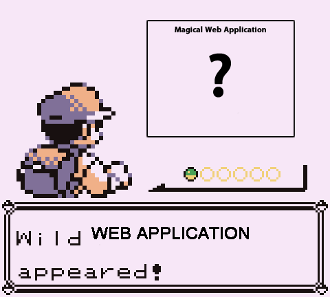
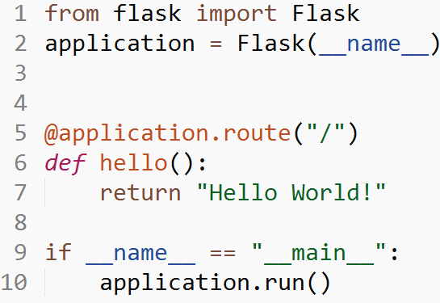
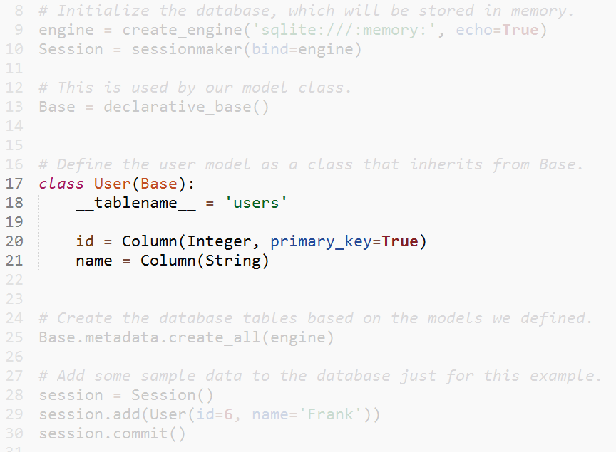
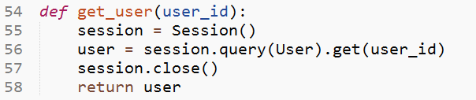

Intro to Modern Web Development
Michael Kelly,
@osmose
or
me@mkelly.me
Intro to Modern Web Development
Michael Kelly, Mozilla, CHF Speaker Series, TrepHub, November 29th 2012
Ego Stroking
Web Developer for Mozilla
Primarily Backend Django Developer
JavaScript on the side
Florida Tech Alumni
Organizer for CHF Speaker Series
Overview
HTTP, Request and Response
Processing a Request
Writing a Template
Databases
HTTP Request
Icons by Adam Whitcroft
HTTP Response
Icons by Adam Whitcroft
Diagrams Are Terrible

Full Hello World

Hello World Simplified
Hello World Simplified
Hello World Result
Pay no attention to the app behind the curtain
Templates!
Hello Template
Hello Template Result
I really like the Template icon
Models!
SQLAlchemy is a little wordy
You are a name and a number

Querying the Database

Actually doing something finally
Almost there!
Turns out it was Frank all along
If this makes no sense, I have failed you and I am sorry
Thanks
Michael Kelly
@osmose
me@mkelly.me
http://mkelly.me/slides/intro_to_modern_web_dev/